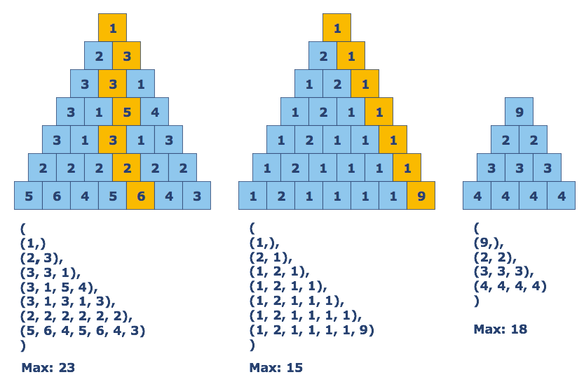

Golden Pyramid¶
Consider a tuple of tuples in which the first tuple has one integer and each consecutive tuple has one more integer then the last. Such a tuple of tuples would look like a triangle. You should write a program that will help Stephan find the highest possible sum on the most profitable route down the pyramid. All routes down the pyramid involve stepping down and to the left or down and to the right.
Input: A pyramid as a tuple of tuples. Each tuple contains integers.
Output: The maximum possible sum as an integer.
Example:
count_gold((
(1,),
(2, 3),
(3, 3, 1),
(3, 1, 5, 4),
(3, 1, 3, 1, 3),
(2, 2, 2, 2, 2, 2),
(5, 6, 4, 5, 6, 4, 3)
)) == 23
Precondition:
0 < len(pyramid) ≤ 20all(all(0 < x < 10 for x in row) for row in pyramid)
Solution:
def parse(pyramid):
if len(pyramid)==1:
return pyramid[0]
else:
last = parse(pyramid[:-1])
return [pyramid[-1][0] + last[0]] + [max(last[i:i+2]) + pyramid[-1][i+1] for i in range(len(last))]
def count_gold(pyramid):
return max(parse(pyramid))